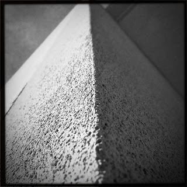

Recovered weblog entry
Corners

I'm back at work full-time now, which means my time to explore this world through the lens of a camera is compressed to a 30 minute window. An opportunity that I am blessed and grateful to have. Lens: Hornbecker
Film: BlacKeys SuperGrain